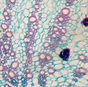

|
 |

{kind=link}
ACKNOWLEDGEMENTS
Acknowledgements are all too often just lists of names, together perhaps with one-word or at most one-line indications of what help was offered. One thinks that there must be a back-story. So here are some.
I often think of what Lincoln Constance offered me. I took his course in plant taxonomy when I was an undergraduate at Berkeley, and was attracted by its flashes of irony and insight, most of which went unnoticed by the Wildife Management students. Lincoln was good enough to sponsor my attempts at research when I was an undergraduate, so I elected him to be my advisor when I became a graduate student at Berkeley. Lincoln didn’t have any special techniques to offer—he was just a good herbarium taxonomist (but one who very much believed in field work, and helped me develop an enthusiasm for it). Some botanists think I must have been a student of Adriance Foster, the plant anatomist at Berkeley, but I really wasn’t. Foster had no idea what I was doing, and didn’t really understand comparative plant anatomy (nor did I, at the time). No, Lincoln was my advisor of record, for a very simple reason. He believed in me. I learned when I became a professor that it’s better to believe in a student, even when the student doesn’t seem to merit it. I was a shy youngster who didn’t believe in myself very strongly, so Lincoln’s help in that department was crucial.
Lincoln really didn’t know what I was doing as a graduate student any more than anyone else did, but he trusted me. I wasn’t the kind of graduate student who wanted a mentor. Mentor is a dirty word to me. It implies the acceptance of influence is some way, to some degree. Lincoln somehow launched me rather than influenced me. Many graduate students seem to work at pleasing an advisor, often to the point of being imitative. Such students look for hints of what a major professor might want, might like. With the help of Lincoln’s freewheeling style and my own resistance to being told what to do, I gained an identity of my own, and I have never regretted it. What is the value of a graduate student whose work is a subset of his major professor’s work? Lincoln watched my progression into plant anatomy, and rather than considering me a loss to the field of plant taxonomy (narrowly defined), he seemed delighted that I was finding myself—whatever that might mean.
A quite different influence during my graduate years was Marion S. Cave. She was a Ph.D. from Berkeley, but never held a professorship. Women didn’t get jobs as professors very often in those days. However, the Botany Department at Berkeley gave her space and supplies for research. I was assigned to a cubicle in the office complex where she had a space. When the time came in my research when I needed to do photographs of my microscope slides, my first impulse was to have a professional photographer in the Life Sciences Building do them. Marion would hear none of that—she photographed chromosomes and other things expertly, and was sure that I could learn. We both had Exakta cameras, and she had a microscope adapter. So she loaned me the adapter and had me take some color pictures. When they came back from processing, she saw that I was delighted, and told me that there was no reason that I couldn’t do B/W pictures. So we did a roll, and she took me to the Department darkroom and showed me how to develop them. Then how to print the negatives. Everything I needed to know! In fact, I have learned very little more beyond what she showed me—or so it seems. I was so excited by doing my own photomicrographs that I often spent long hours in the darkroom. I remember walking back to my little apartment at 2AM some nights. It’s amazing how her initiative in showing me how to do photographic work created wholly new worlds for me, as the photos on the website only hint. In plant anatomy, not infrequently, the story is the illustrations—without them, one could not communicate findings. So Marion may have contributed more to my development as a plant anatomist than any other single person. She was also a cheerful and communicative office-mate, who was willing to encourage the rather curious youngster I must have been.
And then, there are people who believed in me as a scientist. Phil Munz, who essentially decided he wanted to hire me to become part of the group at Rancho Santa Ana Botanic Garden in Claremont in 1956. In those days, one person could hire an academic person, and he had me picked out for the job a couple of years before the job opened. One’s first job is very important. It turned out to be the only job I held, it lasted for more than 37 years—the funding for the job changed several times, but it was essentially just one job. One of the directors at Rancho Santa Ana Botanic Garden, Tom Elias, believed in my research and gave me a great deal of encouragement—in some very practical ways. He insisted that I apply for a grant to get an SEM, and he insisted on teaching me personally how to use a computer. Ed Schneider, director at Santa Barbara Botanic Garden, has made laboratory facilities available to me and joined me in a series of papers using SEM to study xylem, providing a warm collegial atmosphere. Sometimes younger people have helped me to grow and survive. As my last graduate student in Claremont, Scott Zona kept me intellectually alive and scientifically alert; without him, I might have faded out mentally in my later Claremont years. After I retired, Mark Olson allowed me to feel still relevant as a plant anatomist by letting me add ideas on wood anatomy to his Moringa project. He paid me the enormous compliment of quickly going beyond anything I could teach him and becoming his own vital botanical personality.
I have emphasized the role of field work in wood anatomy and other studies, but I did need wood samples I couldn’t collect myself. Regis Miller of the Forest Products Laboratory deserves credit for very generously giving me wood samples from that great wood collection in Madison, Wisconsin. The wood collection at the U.S. Museum of Natural History (Smithsonian Institution) has also been very been good to me, courtesy of William L. Stern and StanleyYankowski. My career would not have been possible without the wonderful library facilities of the Rancho Santa Ana Botanic Garden. Curators have been my friends. Their work goes unacknowledged all too often, as does that of editors and reviewers (even though reviewers have caused me some anguished moments).
Roy Prince deserves thanks for being willing to take on the task of constructing this website. In the process, he has helped me to evolve my ideas and enrich the presentation beyond what I had originally planned.
There are others, whose stories also deserve to be told. This website will continue to change and even expand beyond its present rather extensive size, I hope. Some stories involve assistance in field work. One of my regrets with this website is not being able to show in detail the enormous role that field work played in my development. And without the salient help of particular individuals that field work would not have been possible.